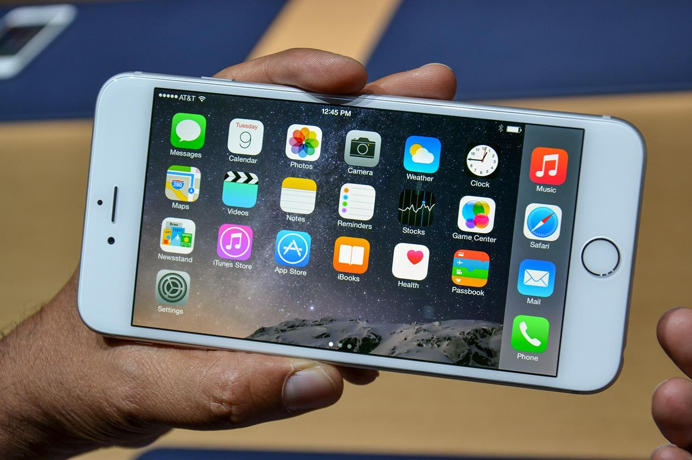
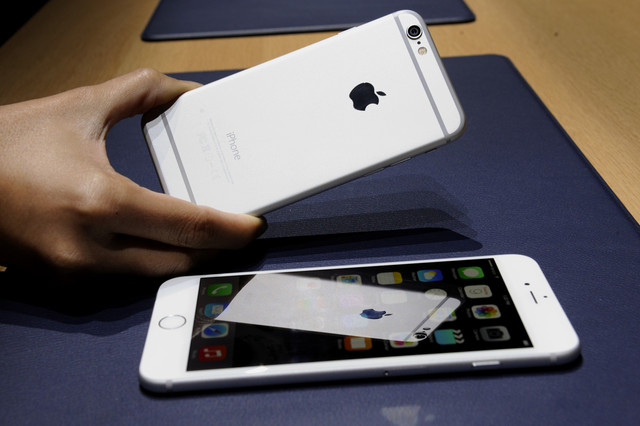

iPhone 6 plus - Review
The iPhone 6 was a phone we all expected to see for the last two years. But only recently did I really start to think Apple might join the phablet race too. The new iPhone 6 Plus is a phone that might not make a lot of sense to some people - after all, it's basically the iPhone 6 with a larger screen and a better battery, but at the expense of pocketability. But that overlooks the bigger picture: this is a phone that's about choice, sure, but also servicing the exploding smartphone market in Asia, where bigger = better when it comes to smartphone screens. Specs are also key issues too, but Apple's proven its tag as a luxury brand can help it get past that handicap.
That said, the iPhone 6 Plus is no slouch in that department either - with its A8 processor, 5.5-inch 1080p screen, upgraded battery which offers 80 hours of standby and all new design to match the iPhone 6, it's a decent proposition. OK, it doesn't have the same octa-core power Samsung is touting around, but then again the iPhone has never been about specs, instead focusing on the user experience. In the hand, it's definitely...big. That feels weird for an iPhone, and iOS stretched to this size feels odd. I know that it's not that far off iPad mini level, but there's something in most people's heads that marks a boundary between tablet and phone, and this device blurs that. The fact the home screen has a landscape mode shows that this is equal parts tablet and smartphone - something I didn't expect from Apple. That said, the super slim dimensions (it's only 7.1mm thick) mean it feels amazing and light, that the larger screen balances it all out well in the palm. You definitely have to fiddle around with it to get to all the corners of the screen, but it's a worthwhile trade-off to get a big screen iPhone, if that's what you've yearned for. The materials are identical to those found on the iPhone 6, with the same metallic / ceramic feel stolen from the iPad Air. The rounded edges feel nice on the larger device, and Apple will be hoping that the cut out lines (presumably for improved antenna sensitivity, so you can actually use the thing as a phone) become iconic for the brand, rather than breaking up the unibody chassis.
Screen
It's brilliant that Apple has split its strategy here - by adding a 1920 x 1080 screen to the iPhone 6 Plus it's shown that this isn't simply a blown-up version of the iPhone 6. It's a powerful tool in its own right, and it gives an even greater impression when looking at the pin sharp graphics. There is the issue of fragmentation in the App Store - now there are apps for iPhone 4S, 5S, 6, iPhone 6 Plus and iPad range, all at different resolutions. But that's not an issue given most apps will auto-scale up, although they can be optimised for the iPhone 6 duo. It's not something that can't be managed, and adding a other couple of resolutions into the mix will be offset by the loss of the 4S in the coming months in the minds of developers, but it's a long way from the single screen experience Apple used to tout.
Performance
Performance-wise, the iPhone 6 Plus is a very accomplished device, and allows users to do things that they might not have been able on the iPhone 5S thanks to the increased grunt and larger screen size. While the press conference didn't give away any specs, beyond the A8 being an uprated 64-bit CPU, it's not going to be in the octa-core band and the RAM is unlikely to be anything over 2GB, which may put some users off if they're all about the power in a big screen device. I'm going to need to give the iPhone 6 Plus a good and thorough testing in real life, to see if it performs well through all apps. But given the iPad Air is still one of the most popular tablets on the planet, and is increasingly being used as a laptop replacement, there's no reason to think what Apple is offering here isn't good enough for most. Gaming on the iPhone 6 Plus is just going to be sensational too. Whether it's the bigger screen, the improved resolution or just the improved grippability, I can see this becoming a real go-to machine if you want to make best use of the massive gaming library Apple has amassed, especially with the awesome Metal upgrade iOS 8 is bringing. As a phone, I can see the iPhone 6 Plus being less used, simply because it's so large. Samsung's Galaxy Note range has never been bought primarily to make calls, but having the functionality makes it useful, rather than just a mini-tablet. That said, the messaging capabilities, combined with the larger screen for increased ability to type, mean this is a phone that I can get on board with from Apple when it comes to communication. The iPhone 5S was just too small to peck out messages on, especially coming from a larger Android phone if a review called for it, so I'm glad Apple has finally given consumers something that's easier to use in that respect.
Camera
This is another good example of Apple splitting its strategy well and making use of the extra space on offer with the bigger screen. Like the iPhone 6, the iPhone 6 Plus has an 8MP sensor with improved iSight and the ability to record in 240fps slo-mo, and it's a very adept camera at that, with the larger screen providing a very good viewfinder without straying into tablet territory. However, the big change here is the use of optical image stabilisation, rather than the digital method used on the iPhone 6. This means that images are clearer, less blurry and can even take in more light thanks to being more stable when pressing the shutter button.
Early verdict
I get the feeling the iPhone 6 Plus won't even come close to the sales of the iPhone 6 in the Western world, being seen as a bit too big compared to the compact pocketability of the smaller new model. But this won't bother Apple as long as it does well in other markets, where big screens are king. And the iPhone 6 Plus is still a very good device in its own right, it just depends on whether you want you phone to have as large a display as possible. With tweaks like optical image stablisation, it's a really good device in its own right. It's certainly not just a bigger iPhone 6. It will be more expensive sadly, so you'll really want to use the features the larger screen and battery offers, but if you've been eyeing Samsung's Note series with increasing lust in the last few years but hate the complexity, this is a great alternative.